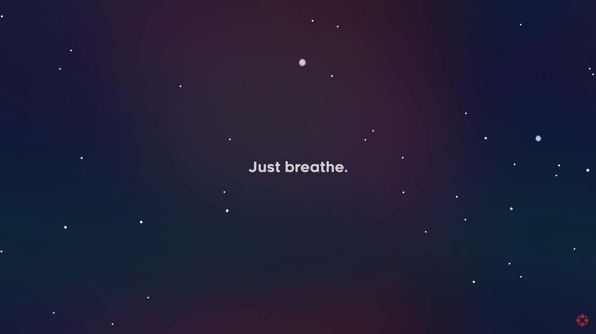
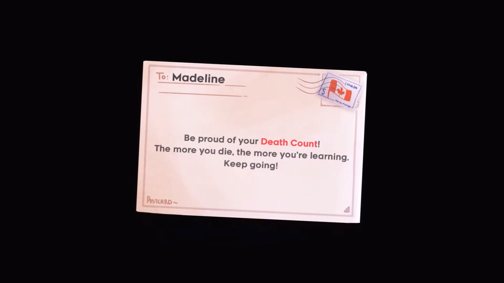
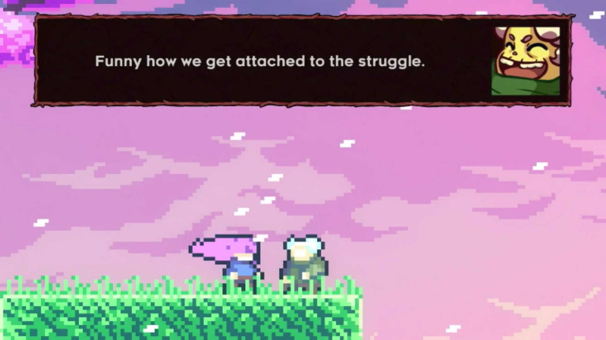
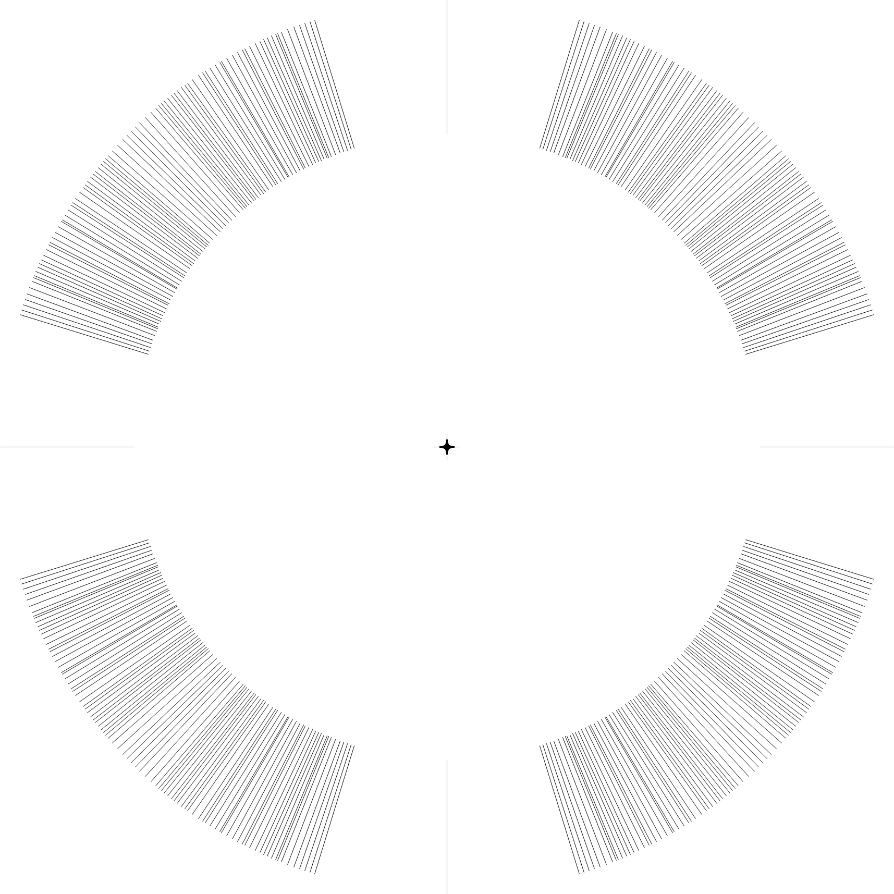
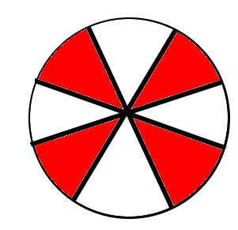
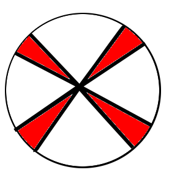

Just Breathe. Celeste is Game of the Decade
Table of Contents
Just Breathe. Celeste is Game of the Decade.
Draft: v1.1 | Posted: 10/21/2018 | Updated: 11/16/2018 | confidence of success: 70% | estimated time to completion: 10/21/2018 | importance: Low
This review contains some light spoilers.
I recently got finished playing Celeste, collecting all the red berries and clearing all the C-sides (I even got the winged golden strawberry, but I haven’t gotten around to getting each of the normal Golden strawberries). I felt motivated to write a long review about it because I have so many thoughts and feelings about the game, but to make a long story short I think Celeste is the best game I have played in at least 15 years. I don’t think this game is necessarily for everyone, and I think my claim of “Celeste is game of the decade” is probably true for only a small subset of people, all of whom are uncannily like myself. That said, the game is just remarkable - one I think I would recommend everyone play if they haven’t already.
There’s a lot I have to say about it, so I think it’s best if I split this review up into little sub-reviews for each element I really cared about. I’ll be talking a little bit about the controls, the story, the mechanics, the general experience of playing it, and it’s place in the platforming genre in general. Feel free to skip around if only certain elements interest you.

Levels as Projects
Something I’ve always loved about fighting games is that the first time you pick up the game you get to play the same game as the 10,000th time. There is “progression” in fighting games - you can obviously improve so much at them that the game ceases to remotely resemble what it used to look like. But the change here takes place in your mind, and in your muscle memory - the character you are wielding does not become more powerful, you become more powerful.
I’d argue most games opt not to take this route, instead being structured around making the character progressively more powerful as the game goes on. This isn’t necessarily a bad thing - the megaman franchise (notably the early megaman X games) certainly points to how it could be done artfully - but I think a good percentage of the time this is used to make the player feel like they are improving when they are actually just controlling a stronger avatar. This is part of the reason why I am so rarely ever able to take RPGs seriously, and why games like Undertale impressed me so much1. Games where grinding for gear and experience is so important typically feel to me like some sort of Skinner Box Lord of the Rings reboot where you have to watch all of Frodo's walking in between the interesting parts of his journey.
The really great thing about Celeste was that, barring chapter 7, you control the same character in every screen. The levels actually get harder by being more difficult slowly over time, which sounds obvious but is actually frighteningly difficult to control for when designing levels (anyone who has ever played Mario Maker would be able to attest to this). In fact, chapter 8 makes your character weaker instead of making the player artificially confident. You’ll never reach a screen in this game that makes you think “well, I just can’t do this, it’s impossible, I’ll come back after I unlock the ability I need to clear this obstacle”. You can clear all of them, right now.
More granularly, pretty much every screen in the game requires you to clear the entire thing without making any mistakes, because every hit kills you and sends you back to the start of the screen. This is felt most strongly on the C-sides, which are relatively short chapters featuring extremely long screens. You could do 90% of the screen perfect, die on the last obstacle, and get sent back to the beginning, having made no progress. I imagine a lot of people found this aspect very frustrating, but I thought it was awesome; the key aspect here is that these long screens do have progression, and do get easier over time.
It's just that the progression is in your mind, not on the screen.
There’s a lot of climbing imagery in this game, and I think using rock climbing terminology to describe the levels is pretty fitting. In rock climbing, “Routes” or “Problems” are static: they don’t move, they don’t change. The problems get easier every time you try them, but not because the problem is actually transforming in any way, but because each attempt provides you a bit of information about the solution to each move, or “beta”. Some routes are short, and some are easy, meaning for the most part you can first-try, or “flash” them without difficulty. Other problems are long and difficult, and require time spent “projecting” them. This can just be a few tries, or several days across multiple sessions.
In Celeste, there is a lot of this similar range of difficulty across screens that makes the process of scaling Celeste mountain appropriately similar to the process of climbing a mountain - some parts are easy, some parts you fall off a lot. The game explicitly encourages you to not sweat the falls, at one point literally telling you to be proud of your death count since it represents progress.

Notably absent from this game, working in concert with this idea, is lives / oneups / game-overs. You’re not actually punished for dying pretty much ever, because not clearing the obstacle is punishment enough - you can try again and again until you finally get it perfect.
No system of rewards will ever be more rewarding than play for its own sake
— Matt Thorson 🍂 (@MattThorson) September 6, 2018
It feels good to send a hard project that you put your soul into working on. It feels good to be rewarded after pushing yourself and accomplishing something that seemed impossibly hard at first - clearing Chapter 7 C-Side was one of the most excited I’ve ever been playing a video game, maybe ever for a single-player game. I think Celeste is so easy to get excited about because the motivation to climb Celeste mountain is as much yours as it is Madeline’s. The player is the one working really hard to overcome all the obstacles, and relating to Madeline’s desire to push herself isn’t just something you’re watching. It’s something that, through playing the game, you experience for yourself.

In general I think games like Celeste are sort of a dying breed. My tinfoil hat theory here is that older games were much shorter due to the games being limited to less disk space, so to create 40 hours of gameplay you had to make your 20-30 minute game impossibly hard so players would have to play the same levels many times to beat it. In the new era of gaming, space is a laughable non-concern, and gaming companies have largely figured out that most people playing video games are looking to relax, not to be pushed hard. This isn’t a bad thing (relaxation is great!) but it makes it difficult for people who love to be challenged to find worthy challenges. I remember talking recently to someone about how new games for people like this just don’t exist anymore, that the niche of people who like them is too small to be worth marketing to. Celeste proved me wrong here - it showed me that games like this are still being made, that people still like them, and that they are still fun.
Hard Platformers as a Sub-Genre
Platformers are arguably the most recognizable gaming genre to exist, and as you might expect there's a sub-group of platformer players that go out of their way to make platforming games that are as hard as possible. There's a number of games that are typically associated with this genre, but I think the easiest way to explain the general feel and appeal to these games is by Guy Collins's "Kaizo Trap" music video, which is based on the famous Kaizo Mario romhacks of Super Mario World. The vibe should be familiar to anybody who played Celeste and it's lovingly animated so please watch it:
This is why I was so amused to find out that one of the creators of Celeste, Matt Thorson, was also the creator of the "Jumper" games, one of the most iconic ultra-difficult freeware platforming-games.
You might recognize Matt Thorson's name attached to stuff like An Untitled Story, Runman, Towerfall, and other stuff, but Thorson's name being attached to Jumper in particular is great because it makes it certainly non-coincidental that Celeste exists so perfectly inside this genre.
The Boss: Did you fill the hallways with nonsensical, lethal yet vaguely passable obstacles?
Lackey: Yes, and we have all the standard electricity, spikes, and fireballs in position.
- Jumper 2
There are two games I want to talk briefly about with regards to this genre in particular: I Wanna Be the Guy and Kaizo Mario World.
I Wanna Be The Guy
I Wanna Be The Guy is a freeware 2D platformer that was released by Kayin in 2007. The game is generally sort of a gag game, since it's insanely hard and punishes you for reacting in fairly natural ways.
One of the first interactions you'll probably get in this game is the section at the start with the Fruit trees. You'll walk under a piece of fruit, and it will fall and kill you. "Okay," you think, "I will jump above the fruit so it falls and doesn't hit me". You jump over the piece of fruit and it falls: great. Your next obstacle is, you guessed it, another piece of fruit. "Piece of cake, I'll jump over this again."
You jump over the fruit and it flies straight up into the sky, killing you.
Q: APPLES DO NOT FALL UP
A: They're more like giant cherries.
- I Wanna Be The Guy: FAQ
The game largely speaks for itself, and it's great if you're the type of person who loves a good laugh at your own expense.
IWBTG gained an instant cult following, spawning many, many fangames that you've probably seen run at marathons like AGDQ (most popular as far as I know is I Wanna Be the Boshy). People loved the jokes, people loved the stupid expectation-subverting obstacles, and more than anything else people loved the difficulty.
Kaizo Mario
Kaizo Mario World was a 2007-2012 series of Romhacks that sometimes goes by the moniker "Asshole Mario". It's a series of extremely difficult custom stages for the SNES classic Super Mario World that seems to deliberately shirk every rule of good game design for the sole purpose of making the player as upset as possible.
The story goes that this romhack was created so that the romhacker could watch his friend play it, and presumably laugh at him for dying at least once on every single clever obstacle he could think of. The levels are virtually impossible to pass on the first try, and even if you know the solutions often require frame perfect or pixel perfect precision.
What Kaizo Mario is perhaps most famous for is the pioneering of the "Kaizo Block", which is a hidden block that is placed at a natural spot in the intutive jump arc of an obstacle. These are funny to watch, if you're not the one playing, because it's obviously unfair and typically kills the player undeservedly.
However, what results from these blocks once the player is aware of them is that they need to be more conscious of their jump trajectories, which makes previously uninteresting obstacles surprisingly challenging. You might think by now the romhack community would have found this played out by now, but in fact these sorts of hidden blocks are as alive as ever even in very difficult hacks - they're usually just marked off to take away the surprise factor from it.
So too it is with so many of the obstacles in these romhacks - the obstacles are ridiculous and often downright stupid, but the solutions to them are often pretty damn interesting to people playing close enough attention, which makes them pretty popular among elite speedrunners of the actual games (and, in fact, a sub community of people who only play hard romhacks, shirking the original game altogether).
Common Threads, and Celeste's Place in the Genre
The common thread between these two games, and pretty much their whole appeal as actual games rather than as gags, is that once you know the solutions they become genuinely challenging learnable games. You'd be hard pressed to call either of them "good games" or "well designed games" but they're genuinely fun in a way that not a lot of games are because every single obstacle is as hard as the hardest obstacle in any other "normal" platformer.
You will die, and you will die a lot. The game would not be what it sets out to be if you could just clear it relatively easily without a few practice attempts. The whole point is that it's too hard to clear on your first try anyways, so if the game hits you with a stupid invisible block or gravity-defying cherry it won't really rob you of too much time.
Which brings us to Celeste.
Celeste isn't exactly like one of these games - it's notably absent of "stupid bullshit obstacles" that these two have in their repertoire. But at the same time, it's sort of like these games; it has the difficulty, it has the spike mazes, it has the tight platforming, it feels an awful lot like one of these games.
My ultimate thesis here is that near the end of Celeste it becomes the final form of these ultra-hard gag games. It's not freeware, it doesn't randomly kill you just because it's funny. You can look ahead at long screens and, in theory, it's possible you can clear every screen on your first attempt.
But you won't, so what does it really matter?
What really fascinated me about Celeste is that the main game was pretty hard, but it wasn't anything like IWBTG or Kaizo. Some of the strawberries were difficult, but manageable. The neat thing about Celeste is that the game evolved into that genre while you were playing it. It was like if the bonus stages of Super Mario World actually were the Kaizo Mario stages. The difficulty gradient is very, very impressive, and I frequently found myself impressed at the devs for being so willing to make the game actually this hard. Like I mentioned earlier, I haven't been pushed this hard in any "real game" in what feels like an extremely long time.
Celeste is a full game made for people who clear full games and then download level editors to make harder levels because the full game was too easy.
The Death of the Tutorial
Something I want to briefly touch upon is how rarely the game ever instructs you, and how unobtrusive that rare instruction is.
Above is the first 9 minutes of the game, which I think is really similar in function to the intro stage of Mega Man X in that it's a fairly natural introduction to almost all of the important mechanics in the game. Egoraptor has a decent video about how that game uses the intro stage for establishing the theme and teaching the player the goals, which I will not be linking due to the decidedly 2011 humor that was remarkably unfunny upon rewatching it for this review. (Feel free to dig it up though, the examples used aren't bad if you can put up with his jokes)
The reason I bring up Egoraptor's video is that he touches upon the idea of conveyance, which What Games Are wonderfully describes as follows
Conveyance is a technique for teaching the rules of a game, and the pattern of its dynamic, to the player without specifically telling her what to do. Conveyance relies on the player to learn simple lessons for which she then figures out more complicated uses, and so the process of grokking the game and learning the game become one and the same.2
The game tells you to relax, places you in a low stress environment, and lets you run around a little bit. You might fall into the bottomless pit at the start and die, but you're placed immediately back at the start, teaching you that you get to try again when you mess up. Eventually, you walk underneath the big block that starts threatening rumbling and, after a long period where you can get out of the way, falls where you used to be. The game shows you that things other than you move, and can (likely) harm you if you don't react to them.
After this you're introduced to the bird that tells you how to climb the walls. This is about as unintrusive as a tutorial can possibly get. It doesn't interrupt you annoyingly, it doesn't talk to you, there's no textboxes, and you can literally just ignore it if you already know what to do. The game provides you with a few more examples where you can try out the thing it just taught you at your own pace. The game continues to the bridge, which begins falling, and just when you think you're about to fall to your death the bird comes back and teaches you about dashing in the same way.
This bird in particular was, weirdly enough, one of my favorite parts of the whole game. This bird comes back several times throughout the game, just sort of hanging out in the background, shouting out some vague command whose utility is your responsibility to figure out. I remember feeling frequently impressed with how easy it was for the levels to teach you even very difficult mechanics to explain with words just by using this bird. My favorite example comes from the Summit B-side
I love this because you aren't explicitly told what is supposed to happen, and since you're only moving vertically you have an arbitrary number of safe attempts at this to learn the proper timing for it. You learn this and instantly you begin thinking about it every time you dash vertically near a wall - it permeates the way you think about levels instantly. The only time Celeste ever pulls you out of the game to teach you something is the one time you're instructed on dashing in the intro stage, which serves as dramatic tension / shows you the gravity3 behind falling into bottomless pits.
For the most part, Celeste trusts you to figure things out by experimenting with them, which is an impressive amount of agency granted to the player in my opinion.
Story
The nice thing about the story in Celeste is that it is mostly optional, being mostly overlayed on top of the actual gameplay. I think one of the weaker parts of indie platformers as a genre is that they shoebox the player a bit too hard into the story. Most people interested in platformers are typically used to the Super Mario Brothers style of plot (i.e. "the princess is in trouble, go save her" with no interruption beyond that), so games that pull too strongly upon the story despite mostly being about platforming usually detract from the experience.
Every cutscene is immediately skippable, and no information gathered from cutscenes is pretty much ever necessary to clear the game. It's very possible that you could skip every cutscene on your first playthrough and still enjoy the game without a problem, mostly owing to the excellent art style of the game. Threatening things look threatening, desirable things look desirable, goals are always easily identifiable, and the gameplay is linear enough that the next screen is pretty much all you ever need to think about.
That said, I found the story to be a very strong point of the game. It's cute, relateable, and surprisingly optimistic despite being centered around normally heavy topics like mental illness and self-discovery.
I won't dive too deep into the bits of the story just in case anyone is interested in playing the game without having the entire game spoiled for them. That said, I have a few short thoughts on the story that might be considered light spoilers so if that bothers you please play the game before continuing.
The first of two thoughts I had about this game was that it's treatment of mental illness was one I found very refreshing, managing to capture Madeline's struggle pretty well, including her misunderstandings of what will end up working. Most notable for me was in the cutscene after Chapter 5, where Madeline confronts the dark part of herself and tells her that she is going to "let go" of her. I was originally sort of let down by this, because the idea that you can just cast off the bad parts of yourself is more self-help-drivel and less real-solution-to-problem. However, I was pleasantly surprised by the fact that trying this made Madeline fall off the mountain entirely, and that her reaching the summit eventually required her to make peace with herself instead, rather than trying to ignore parts of herself altogether. On the whole I found it very down-to-earth; it reminded me that at times, you just have to breathe.
The second of two thoughts ties into the idea of Hard Platformers as a Sub-Genre I mentioned before. A lot of Madeline's motivation for climbing the mountain is that she just wants to prove to herself that she's capable of doing it, which I think the intense difficulty of the game itself mirrors in a wonderfully satisfying way. You might be midway through playing the C-sides and think "why am I even bothering to do this?" to which your own answer, funnily enough, is the same answer Madeline gives for climbing Celeste mountain.
Because I think I can do it, and I need to prove it to myself.
Human-Game Interaction
There's a bunch of much nerdier minutae-oriented thoughts I had about Celeste, and those are going here at the end. Feel free to skip these if you're not that invested in what I thought of the game's physics / controller support / UI / etc.
Movement and Controls
The thing that drew me to Celeste in the first place was the movement, which looked like everything I could ask for in a platformer - fast-paced, high-agency, tightly controlled movement with simple elements interacting to create something complicated.
I’ll go through each of these things, what they mean, and why I thought Celeste did a good job with them.
Celeste uses what I like to call “the Mega Man jump” for its jumping, which is simply that gravity increases once you reach the apex of your jump or when you release the jump button, whichever is sooner. Kyle Pittman gave a really great talk about this sort of jump in game design, in which he dives into the basic mathematics behind it.
This sort of jump feels really good, and by itself made Mega Man 2 stand out so many years ago. Putting so much control over the jump heights in the hands of the player allows you to design really tight platforming sections and also trusts the player to master a bunch of different jump heights. There’s a number of obstacles in the game where these short jumps are necessary to clear it, none of which are so strict to require frame perfect specific jump heights. The result of this is that jumping feels really good once you get the hang of it, and that the un-unwieldiness of jumping means you’ll never blame the game’s mechanics for failing an obstacle (e.g. “ugh I couldn’t clear this part because the height I needed was too high for short jump”).
Celeste’s movement doesn’t have that many elements to it - there’s running, jumping, dashing, climbing, and walljumping. But where it shines is the way these limited elements interact to create a very wide repertoire of options on any given screen. One example I can talk briefly about is how walljumping during an upward dash let’s you keep your upwards momentum during them. There’s a crazy amount of places you can use this move and not all of them necessarily make your life any easier. A huge part of the game is figuring out which of your moves will let you pass the obstacle, and there isn’t really a single move that you can pass everything with.
What I love about this is that you end up with a pretty strong mastery of the engine by the time you get around to completing the C-sides. The rabbit hole goes much deeper, of course (anyone wanting a taste can check out the current Any% WR by TGH), but even the speedrun is mostly using techniques the game explicitly teaches you at some point in the later stages of the game (along with strong execution and clever routing). Celeste is built for you to be able to be good at it, and beyond that demands you become good at it if you even want to clear it. There's no Power Creep in the game that arises from "too many movement mechanics", because there's so few core mechanics and they're all so interlocked, which makes the game relatively straightforward despite being much more complicated than it appears at first glance.
Controller support
As a snobby melee player, I try as hard as possible to use GameCube controllers for every single game I play, and luckily Celeste is straightforward enough to be bound to a gamecube controller without issue. Celeste’s controller support is pretty solid, but has some very weird shortcomings that I’m not sure are Celeste’s fault or Steam’s. Button mapping is fine, and for the most part analog stick behavior is pretty normal. One place where I had some gripes was how the game handles diagonal inputs on the analog stick. Most of the movement in the game is 8 way digital, and aerial drift is likewise non-analog which took some getting used to (I kept trying to drift slightly one direction and either not moving or going much further than intended). However, a legitimate gripe of mine is how strangely the controller was mapped to these eight directions. Again, relating everything to melee, I was hoping that the gate would function like melee fox/falco upB, which has cardinals for seventeen degrees and has everything else perform a slanted angle. Since the game doesn’t have slanted angles (using them would either make the game unbeatable on keyboard or make the mechanic useless for beating the game), I was hoping that whole zone would just yield diagonal.

I expected the input map to just be evenly partitioned into eighths, each yielding the appropriate angle, like this (please excuse the very crude drawing)

But weirdly what I noticed was that the input map was very biased against the diagonal angles, like so

It makes sense, I suppose, since diagonal angles are much rarer in the actual puzzles, but led to a number of frustrating situations where I would just go straight when I was just a little off. I know the game is getting analog values, since the feather uses all the angles instead of digital inputs, so I can only imagine this is a deliberate decision. It’s not a huge deal, I did manage just fine, but if I plan on speedrunning the game I might consider using a different controller with a better dpad to use for normal non-feather movement.
Aside from this minor gripe it was pretty normal, and my friends made fun of me for playing through this game with an analog stick anyways, so your mileage may vary. I know that the top speedrunner for this game uses a DualShock PlayStation controller, using d-pad for movement and the sticks for feather movement. Assuming you can press things just fine, this strikes me as something that would cause no issues.
Menus / UI / Navigation
I thought that the menus were pretty solid, they ran with a similar philosophy that the Super Monkey Ball games did which makes them very well suited for speedrunning; Narcissa Wright has a great video briefly elaborating upon this.
I think the game would've been better with some sort of map, since collecting the strawberries was a bit of a nuisance. More on that front, I found that some of the strawberries (and some of the solutions to crystal hearts) were, to be honest, sort of bullshit; some of the hearts require you to fall down specific bottomless pits that won't kill you but instead bring you to a new room, and some of the hearts require you to memorize puzzle sequences from other crystal hearts which honestly was never going to happen in natural gameplay (you should just look these up if you're interested in the C sides and aren't a diehard no-spoiler completionist). Likewise the smb3 easter egg solution to the crystal heart in chapter 7 was cute but also in my opinion pretty lame to be required to unlock the c-sides.
My last complaint is that backtracking isn't possible, which makes collecting all the strawberries a bit of a hassle sometimes when there are branching paths. It would be nice if there was some sort of "back one screen" menu option but I can understand the rationale for not including it.
Overall, though, I thought that the user interface was pretty friendly and unobtrusive, and made the game overall better rather than worse.
Closing Thoughts
I genuinely think that if you like platformers and have not already played through Celeste, you are doing yourself a great disservice. Completing the game through the C-sides will certainly not appeal to everybody, but the nice thing about Celeste is that you don't go that far to "beat" it. Similar to how MMOs typically structure their content towards "endgame", most of Celeste "happens" after you beat it, in the B and C sides. The "core" game is not a huge commitment and not overly difficult if that's something that would put you off, so even if you're not interested in throwing yourself at a very challenging project of a game I still consider Celeste among the better games you could purchase right now.
Celeste truly has it all, and I am very happy to have played it4.
Footnotes:
I think Undertale gets a bad reputation because of it's fanbase which I briefly want to say I find a little ridiculous - I feel genuinely bad for you if you're unwilling to even privately enjoy things because people that annoy you also like them.
big ups for female default pronouns / use of "grok", seems fitting to use this quote to describe Celeste
no pun intended
Horheristo of youtube puts this quite nicely:
Celeste is the perfect precision platformer:
✔ Tight controls.
✔ Proper difficulty scaling.
✔ Interesting concept and mechanics that work in harmony.
✔ Cute and detailed graphics, with good contrast.
✔ Secrets everywhere.
✔ Assist mode for disabled players.
✔ Non-intrusive Neat little story for those interested.
Get it if you didn't already. As a huge platformers fan, I have 0 complaints about this one
I also didn't even get into the phenomenal OST, which is incredible also.